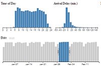

Crossfilter Chart |
|  |
Crossfilter Description: |
Crossfilter displays multiple charts, one for the datetime grouping field and one for each metric. Clicking and dragging on any chart will establish a range, which acts as a filter on all other charts. You can also drag the range itself to move it without changing its size. Field 1? - Time - This field will represent the time factor by which other metrics can be filtered. Range of values is displayed on the X axis and count of values is displayed on the Y axis. Field 2+ - Metric - This field will represent the value. Range of values is displayed on the X axis and count of values is displayed on the Y axis. Notes:
|
General Field Definitions: |
Time - This column must be a Datetime data type. Metric - This column can be any data type. It is generally an aggregate, and most commonly a numeric, but does not have to be. These columns are the elements that are being charted, mapped, or displayed on your visualization.
|